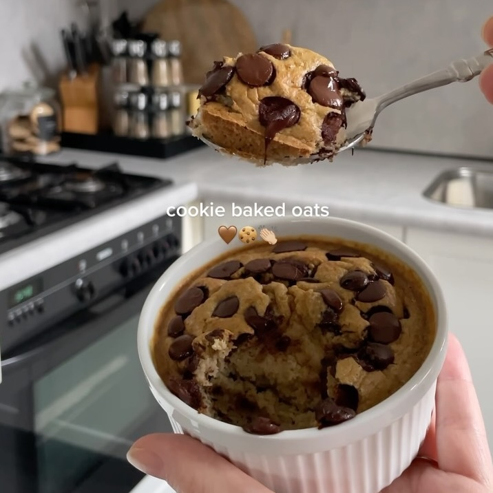

Galleta de Baked Oats
Ingredientes:
- ½ Banano
- 1 taza de avena
- ½ taza leche de preferencia
- 1 huevo
- 1 cucharadita de polvo para hornear
- Chispas de chocolate
Instrucciones:
- Añade banano, avena, leche, huevo y el polvo para hornear en un vaso para licuar.
- Licúa y metelo a un pequeño bowl
- Añade chispas de chocolate
- Meta al horno por 20 a 25 minutos a 175°